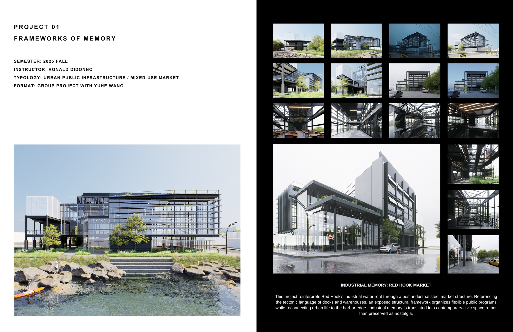

Frameworks of Memory treats the market as civic infrastructure — a covered public room where commerce, gathering, and everyday ritual accumulate over time. A clear structural frame holds a flexible interior, so the building becomes a stable armature for the changing life and memory of the neighborhood.
Frameworks of Memory 把市场视作一种市政基础设施——一个有顶的公共大厅，让商业、聚集与日常仪式在时间中层层累积。清晰的结构框架容纳灵活的内部，使建筑成为承载社区不断变化的生活与记忆的稳定骨架。
The project is carried from massing and program through to technical resolution, with a full set of plans, sections, and details developed to construction-document standard. · 项目从体量与功能一直推进到技术深化，并按施工图标准完成整套平面、剖面与节点大样。
